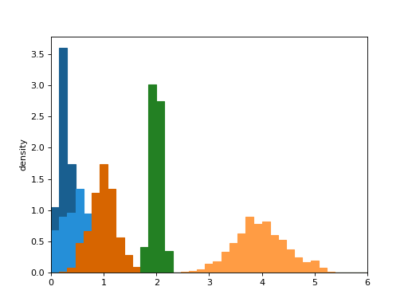

deltametrics.plot.show_histograms¶
-
deltametrics.plot.show_histograms(*args, sets=None, ax=None, **kwargs)¶ Show multiple histograms, including as sets.
- Parameters
*args (
tuple) – Any number of comma separated tuples, where each tuple is a set of (counts, bins), for example, as an output from np.histogram().sets (
list, optional) – A list or numpy array indicating the set each pdf belongs to. For example, [0, 0, 1, 1, 2] incidates the first two *args are from the first set, the third and fourth belong to a second set, and the fifth argument belongs to a third set. Length of sets must match the number of comma separated *args. If not supplied, all histograms are colored differently (up to 10).ax (
matplotlib.pyplot.axes, optional) – Axes to plot into. A figure and axes is created, if not given.**kwargs – Additional matplotlib keyword arguments passed to the bar plotting routine. In current implementation, cannot use arguments width, edgecolor, or facecolor.
Examples
locs = [0.25, 1, 0.5, 4, 2] scales = [0.1, 0.25, 0.4, 0.5, 0.1] bins = np.linspace(0, 6, num=40) hist_bin_sets = [np.histogram(np.random.normal(l, s, size=500), bins=bins, density=True) for l, s in zip(locs, scales)] fig, ax = plt.subplots() dm.plot.show_histograms(*hist_bin_sets, sets=[0, 1, 0, 1, 2], ax=ax) ax.set_xlim((0, 6)) ax.set_ylabel('density') plt.show()

{kind=link}
{kind=link}